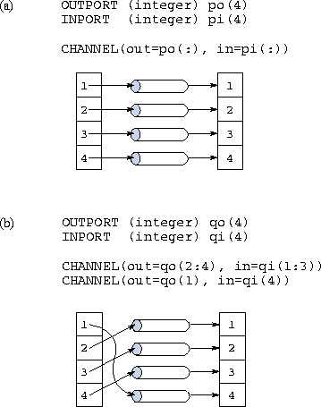
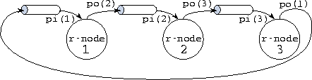

![[DBPP]](pictures//asm_color_tiny.gif)


![[Search]](pictures//search_motif.gif)
FM processes, like the tasks introduced in Part I, cannot share data directly. Instead, they coordinate their execution and exchange data by sending and receiving messages on single-producer, single-consumer channels and multiple-producer, single-consumer mergers. Hence, the next step in program implementation after processes have been defined is to establish the channels and mergers needed for communication.
In this section, we focus on the constructs and techniques used to specify structured, ``synchronous'' communication operations (Section 2.3). In subsequent sections we examine both unstructured and asynchronous communication.
The basic building block from which communication structures are constructed is the channel, created by executing the CHANNEL statement. This statement has the general form
CHANNEL(in= inport, out= outport )
and both creates a new channel and defines inport and outport to be references to this channel, with inport able to receive messages and outport able to send messages. The two ports must be of the same type.
Optional iostat= and err= specifiers can be used to detect error conditions, as in Fortran file input/output statements. An err= label specifier causes execution to continue at the statement with the specified label if an error occurs while creating the channel. An iostat= intval specifier causes the integer variable intval to be set to zero if no error occurs and to a nonzero value otherwise. If neither err= nor iostat= specifiers are provided, an error causes the FM computation to terminate.
For succinctness, we use Fortran 90 array sections in the CHANNEL statement. An array section is like an array element but with a range rather than an index provided for one or more of its subscripts. A range is represented by a triplet with the following general form. lower-bound : upper-bound : stride
Bounds can be omitted if the corresponding bounds of the array are required; a stride of 1 is assumed if stride is omitted. See Figure 7.1 in Chapter 7 for examples of array sections.
Array sections provided in the in= and out= components of a CHANNEL statement must be conformant, that is, of the same size and shape. A channel is created for each pair of corresponding elements, as illustrated in Figure 6.1.

Figure 6.1: Array sections and the FM CHANNEL statement.
In (a), a single statement creates four channels and, for i=1..4
,
defines outport po( i
) and inport pi( i
) to
reference the same channel. Hence, for example, a message sent on
po(1) can be received on pi(1). In (b), two statements
are used to define a ``staggered'' mapping of inports to outports, in
which outport qo(mod( i
,4)+1) and inport qi( i
)
reference the same channel. Therefore, a message sent on qo(1) can
be received on qi(4).
A process sends a message by applying the SEND statement to an outport. Doing this adds the message to the message queue associated with the outport, with the outport declaration specifying the message format. For example, in the following code fragment the SEND statement sends a message consisting of the integer i followed by the first ten elements of the real array a.
OUTPORT (integer, real x(10)) po
...
SEND(po) i, a
A process sends a sequence of messages by repeated calls to SEND; it can also call ENDCHANNEL to send an end-of-channel (EOC) message. This usage is illustrated in Program 6.1, where the foundry process uses the SEND and ENDCHANNEL statements to send a total of 100 integer messages. ENDCHANNEL also sets the value of the outport variable to be NULL, thereby preventing further messages from being sent on that port.
Like Fortran's write and endfile statements, SEND and ENDCHANNEL are nonblocking (asynchronous); that is, they complete immediately. Variables named in a SEND statement can be modified in subsequent statements, without affecting the send operation.
An operation on an undefined port is treated as erroneous. Optional err= and iostat= specifiers (described in Section 6.3.1) can be included in SEND and ENDCHANNEL statements to indicate how to recover from this and other exceptional conditions.
A process receives a value by applying the RECEIVE statement to an inport. The inport declaration specifies the message format. For example, the bridge process in Program 6.1 makes repeated calls to the RECEIVE statement to receive a sequence of integer messages, detecting end-of-sequence by using the iostat specifier. A RECEIVE statement is blocking (synchronous); that is, it does not complete until data is available. Hence, a consumer process such as bridge cannot ``run ahead'' of the corresponding producer.
An array size can be included in a message, thereby allowing arrays of different sizes to be communicated on the same channel. For example, the following code fragment receives a message comprising the integer num followed by num real values. The incoming data are placed in array elements a(1,offset), a(1,offset+1), ..., a(1,offset+num-1).
INPORT (integer n, real x(n)) pi
integer num
real a(128, 128)
RECEIVE(pi) num, a(1,offset)
An operation on an undefined port is treated as erroneous. A RECEIVE statement can include optional err= and iostat= specifiers to indicate how to recover from this and various exceptional conditions. In addition, an end= label specifier causes execution to continue at the statement with the specified label upon receipt of a end-of-channel message. This mechanism can be used to rewrite the bridge process of Program 6.1 as follows.
PROCESS bridge(pi) ! Process definitionINPORT (integer) pi ! Argument: inport
integer num ! Local variable
do while(.true.) ! While not done:
RECEIVE(port=pi, end=10) num ! Receive message
call use_girder(num) ! Process message
enddo !
10 end ! End of process
 .
. Ring Pipeline:
Ring Pipeline:
Program 6.2 implements the ring-based pairwise interactions algorithm of Section 1.4.2. It comprises a main program and a process definition. The main program uses two channel statements to create P channels (Figure 6.1) and a process do-loop to create P processes. One inport and one outport are passed to each process as arguments, thereby connecting the processes in a unidirectional ring (Figure 6.2). The variables i and P are also passed to the processes as arguments; this capability is discussed in Section 6.7.
The ringnode process's four arguments are a unique identifier, the total number of processes, and an inport and outport referencing channels from one neighbor and to the other neighbor in the ring. The process first initializes its local state and then performs n-1 send-receive-compute steps before terminating.

Figure 6.2: FM implementation of three-process ring pipeline showing channel
connections.
 .
. Search:
Search:
Program 6.3 implements a prototypical tree-structured computation. The program explores a binary tree recursively in the manner of Algorithm 1.1, creating a task for each tree node and returning the total number of leaf nodes that represent solutions. In this simple program, the tree is not represented by an explicit data structure; instead, a process's position in the tree is represented by an integer.
The main program makes an initial call to the process tree. This process uses a process block to create recursively a set of 2n-1 ( n a power of 2) processes connected in a binary tree of depth . Each process is connected to its parent by a channel; nonleaf processes also have channels from their two offspring. Notice the use of a subroutine call within a process block, as discussed in Section 6.2.2.
© Copyright 1995 by Ian Foster